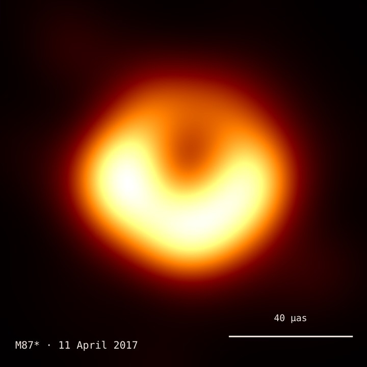
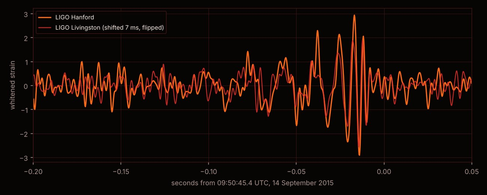
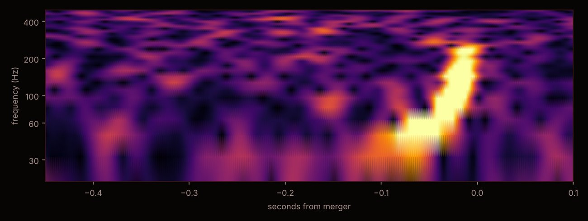
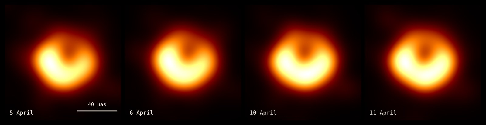
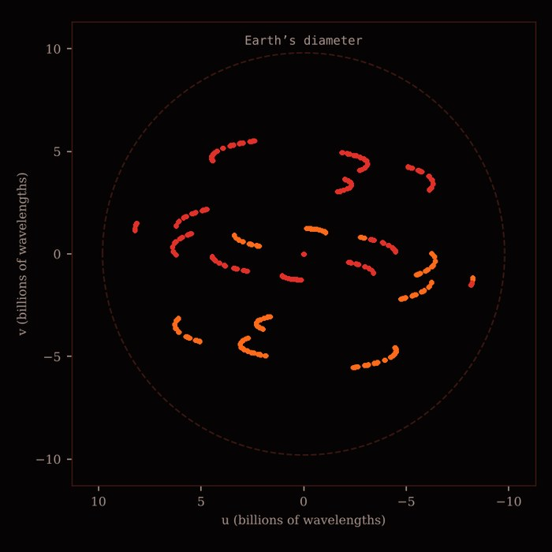

YOUR ROUTE
Six stops, from “what is it?” to the edge of physics
You don’t need any maths beyond school level. Each stop starts with one question, gives you instruments to answer it yourself, and shows the real evidence: actual telescope data, actual detector signals, actual papers. Take them in order, or jump to whichever stop grabs you.
- 01What is a black hole?Escape speed, the event horizon, and why tides can kill.
- 02How they are bornStars, collapse, and the mass limits that decide a star’s fate.
- 03How we see themStar orbits, gravitational waves, and the first images.
- 04Spinning black holesDragged space, the ergosphere, and cosmic engines.
- 05Black holes glow, and dieHawking radiation and the information paradox.
- 06The edge of physicsHolography, wormholes, and what nobody knows yet.
When you finish, you will be able to
- Explain what an event horizon is, and work out how small anything would have to be squeezed to become a black hole.
- Explain why falling into a giant black hole is gentler than falling into a small one.
- Describe how a dying star ends up as a white dwarf, a neutron star or a black hole, and why its mass decides.
- Weigh the black hole at the centre of our galaxy from a star’s orbit, as the 2020 Nobel laureates did.
- Recognise a gravitational-wave chirp in real LIGO data, and say what produced it.
- Explain what the famous black-hole image really shows, and how an Earth-sized telescope made it.
- Explain how spinning black holes power quasars and jets.
- Explain why black holes have a temperature and slowly evaporate, and state the information paradox in your own words.
- Say what the holographic principle claims, and where today’s research is heading.
What you need
- TIME
- About 2 hours in total, 15–25 minutes per module. Your progress is saved in this browser, so you can stop anywhere.
- MATHS
- None required. Equations sit in fold-out “go deeper” panels for those who want them.
- SOUND
- Headphones help in Module 03, where you can hear real and simulated black-hole collisions.
- FINISH LINE
- Pass the three-question check in each module to earn all six badges.
MISSION BRIEF
One big question
Each module opens with the question it answers.
INSTRUMENTS
Play with real physics
Every console runs the actual equations. Nothing is a canned animation.
CALIBRATION
Earn six badges
Pass the 3-question check at the end of a module to sync it.
GO DEEPER
Equations on request
Fold-out panels show the maths for students who want it.
MODULE 01 · DEFINITION
What is a black hole?
MISSION BRIEFHow hard would you have to squeeze the Sun before its own light could no longer get out?
Throw a ball upward and it falls back. Throw it faster than 11.2 km/s and it escapes Earth for good. That speed, the escape velocity, depends on how much mass there is and how close you stand to it. Squeeze the same mass into a smaller ball and the escape velocity at its surface goes up.
Keep squeezing and eventually escape velocity reaches the speed of light, about 300,000 km/s. Then nothing, not even light, can leave. The surface where that happens is the event horizon, and its radius is the Schwarzschild radius:
$r_s=\dfrac{2GM}{c^2}$
For the Sun that is about 3 km. For Earth, 9 mm, the size of a marble.
A horizon is not a surface
There is nothing solid at the event horizon. It is a boundary in spacetime: cross it and every possible future path leads inward. Someone falling in feels nothing special at that moment. A distant observer sees something very different. The infalling clock appears to tick slower and slower, and the light from it is stretched redder and redder, until it fades from view just outside the horizon.
What does hurt is the tide. Gravity pulls harder on your feet than on your head, and near a small black hole that difference is lethal long before the horizon. Astronomers really do call it spaghettification.
Mission log: how we figured this out
- John Michell imagines “dark stars” so massive their light falls back. Laplace has the same idea in 1796.
- Einstein’s general relativity: gravity is the curvature of spacetime.
- Karl Schwarzschild finds the exact solution for a single mass, while serving at the front in World War I. It contains $r_s$.
- Oppenheimer and Snyder show a heavy enough dying star collapses past its horizon.
- David Finkelstein shows the horizon is a one-way membrane, not a wall.
- Roy Kerr finds the solution for a spinning black hole (Module 04).
- John Wheeler popularizes the name “black hole”.
- Cygnus X-1, an X-ray source orbiting a blue giant, becomes the first strong black-hole candidate.
- Stephen Hawking shows black holes glow and slowly evaporate (Module 05).
- LIGO hears two black holes merge (Module 03).
- The Event Horizon Telescope photographs the shadow of M87*.
- Nobel Prize: Penrose for the theory, Genzel and Ghez for the black hole at our galaxy’s centre.
- First image of Sagittarius A*, our own galaxy’s black hole.
ARCHIVE · REAL DATA, IMAGES AND VIDEO

GO DEEPER · THE EQUATIONS
Escape velocity. Setting kinetic energy equal to the gravitational binding, $\tfrac12mv^2=GMm/r$, gives $v=\sqrt{2GM/r}$. Setting $v=c$ gives $r_s=2GM/c^2$. This Newtonian argument is not really valid at light speed, but by a happy coincidence general relativity gives exactly the same radius.
The Schwarzschild metric describes spacetime outside any spherical mass: $$ds^2=-\Big(1-\frac{r_s}{r}\Big)c^2dt^2+\frac{dr^2}{1-r_s/r}+r^2d\Omega^2 .$$
Time dilation. A clock held at radius $r$ ticks slower than a distant one by $\sqrt{1-r_s/r}$, which goes to zero at the horizon. The “1 hour on surface” readout uses this.
Tidal stretching. The difference in pull across a length $L$ at radius $r$ is $\Delta a\approx 2GML/r^3$. At the horizon this is $\Delta a=Lc^6/(4G^2M^2)$, which falls as $1/M^2$.
MODULE 02 · ORIGIN
How black holes are born
MISSION BRIEFEvery star is a tug of war between gravity crushing inward and pressure pushing out. What happens when the pressure loses?
A star like the Sun burns hydrogen into helium in its core, and the heat of that fusion holds it up. When the fuel runs out, gravity wins and the core shrinks. What it shrinks into depends on its mass:
- White dwarf. Electrons packed so tightly that quantum mechanics forbids them from squeezing closer. This only holds up to about 1.4 Suns, the Chandrasekhar limit (1930).
- Neutron star. Above that, electrons are crushed into protons, making neutrons, and the core becomes a city-sized atomic nucleus. That holds up to roughly 2–2.3 Suns.
- Black hole. Above that, no known force can stop the collapse.
The collapse itself
For a massive star the end comes in under a second. The iron core, about the size of Earth, collapses at up to a quarter of the speed of light. Often it rebounds as a supernova that outshines its whole galaxy for weeks. If too much matter falls back, or the explosion fails entirely, the core keeps going and a horizon forms. In 1965 Roger Penrose proved that once a horizon-like “trapped surface” forms, a singularity inside is unavoidable. That proof was part of his 2020 Nobel Prize.
And the giants?
Almost every large galaxy has a supermassive black hole at its centre, with millions to billions of times the Sun’s mass. How they grew so big so fast is still an open question. The James Webb Space Telescope keeps finding heavy ones less than a billion years after the Big Bang, earlier than simple growth models predict.
ARCHIVE · REAL DATA, IMAGES AND VIDEO
GO DEEPER · WHY THERE IS A MAXIMUM MASS
A star supported by degenerate electrons has pressure $P\propto\rho^{4/3}$ once the electrons become relativistic. Gravity’s demand on pressure scales the same way with density, so increasing the density no longer helps. Equilibrium only exists below a critical mass, $M_{\rm Ch}\approx1.4\,M_\odot$ (Chandrasekhar). The same logic, with the much stiffer and less certain nuclear equation of state, gives the neutron-star maximum (Tolman–Oppenheimer–Volkoff limit), measured to be at least about $2\,M_\odot$ from heavy pulsars.
Stellar lifetimes scale roughly as $t\approx10^{10}\,{\rm yr}\,(M/M_\odot)^{-2.5}$. Heavy stars burn far faster, which is why black-hole progenitors live only a few million years.
MODULE 03 · DETECTION
How we see the invisible
MISSION BRIEFIf no light escapes, how do we know black holes are real? We watch what they do to everything around them.
There are four main ways. Stars orbiting nothing visible. Gas heated to millions of degrees as it spirals in, glowing in X-rays. Ripples in spacetime itself from colliding black holes. And, since 2019, direct pictures of the shadow a black hole casts on its glowing surroundings.
1 · Weigh the monster at the centre of the Milky Way
Since the 1990s, two teams led by Reinhard Genzel and Andrea Ghez have tracked stars whipping around an invisible point called Sagittarius A*. The star S2 completes an orbit every 16 years and passes within about 120 times the Earth–Sun distance of it, at nearly 3% of light speed. Only a black hole fits that much mass into that small a space. Find the mass yourself:
2 · Hear two black holes collide
On 14 September 2015, the two LIGO detectors in the USA registered a tiny shiver: a stretch and squeeze of their 4 km arms by a few thousandths of a proton’s width. It came from two black holes, of about 36 and 29 Suns, merging 1.3 billion years ago. In the last fraction of a second they converted 3 Suns of mass into gravitational waves, briefly outshining all the stars in the observable universe combined, in gravitational rather than visible power. As they spiral together the waves rise in pitch: a chirp.
REAL DATA · THE ACTUAL SIGNAL FROM 14 SEPTEMBER 2015


3 · Photograph the shadow
Gas swirling around a black hole glows, and gravity bends that light around the hole. The result is a bright ring around a dark centre: the shadow. General relativity predicts its size exactly: about $2\sqrt{27}\,GM/c^2$, a little over five times the horizon radius. The Event Horizon Telescope linked radio dishes across the planet into one Earth-sized telescope to resolve it. Check the prediction:
REAL DATA · THE M87* IMAGE, REBUILT FROM THE RAW OBSERVATIONS


GO DEEPER · THE THREE FORMULAS BEHIND THE INSTRUMENTS
Kepler’s third law in convenient units: $M/M_\odot=(a/{\rm AU})^3/(P/{\rm yr})^2$. For S2, $a\approx1030$ AU and $P\approx16.0$ yr give $M\approx4.3\times10^6M_\odot$.
The chirp. At leading order the gravitational-wave frequency a time $\tau$ before merger is $$f(\tau)=\frac1\pi\Big(\frac{5}{256\,\tau}\Big)^{3/8}\Big(\frac{G\mathcal M}{c^3}\Big)^{-5/8},$$ where $\mathcal M=(m_1m_2)^{3/5}/(m_1+m_2)^{1/5}$ is the chirp mass. LIGO reads $\mathcal M$ directly off how fast the pitch rises.
The shadow. Light rays passing closer than impact parameter $b_c=3\sqrt3\,GM/c^2$ are captured. So the shadow’s angular diameter at distance $D$ is $\theta=2b_c/D$. For spinning holes it changes by only a few percent.
MODULE 04 · ROTATION
Spinning black holes
MISSION BRIEFReal black holes spin, some at nearly the speed of light. What does a spinning hole do to the space around it?
Stars rotate, and when they collapse they spin up like a figure skater pulling in their arms. In 1963 Roy Kerr found the exact spacetime of a spinning black hole. Remarkably, it is described by just two numbers: its mass and its spin. (A third, electric charge, is negligible in nature.)
A spinning black hole drags space around with it, an effect called frame dragging. Close enough, in a region called the ergosphere, nothing can stand still: even a rocket firing at full power is swept around. Material in the ergosphere can still escape, and a clever enough process can even extract the hole’s rotational energy. Many astronomers think magnetic fields threading spinning holes do exactly this to launch the jets seen shooting from galaxies like M87.
The most efficient engine in the universe
Matter spiralling into a black hole heats up and radiates before it crosses the innermost stable orbit. For a non-spinning hole that releases about 6% of the matter’s rest-mass energy, $E=mc^2$. For a hole spinning near its limit, up to 42%. Hydrogen fusion in stars manages 0.7%. That is why quasars, black holes swallowing gas at the centres of young galaxies, can outshine a trillion stars.
Reading the image at the top
The live render at the top of this page traces light rays backwards from your screen through curved spacetime. Several things in it are real predictions:
- The disk appears to wrap over and under the black hole. You are seeing the far side of the disk, its light bent up and over the top and down under the bottom.
- One side is much brighter. That gas is moving toward you at a sizeable fraction of light speed, and relativistic beaming concentrates its light forward.
- The dark centre is bigger than the horizon. That is the shadow from Module 03.
ARCHIVE · REAL DATA, IMAGES AND VIDEO
GO DEEPER · KERR IN FORMULAS
With $M=G=c=1$ and spin $a=J/M\in[0,1]$, the horizon sits at $r_+=1+\sqrt{1-a^2}$ and the ergosphere’s outer edge on the equator at $r=2$.
The innermost stable circular orbit is $r_{\rm isco}=3+Z_2\mp\sqrt{(3-Z_1)(3+Z_1+2Z_2)}$ (upper sign for orbits with the spin), with $Z_1=1+(1-a^2)^{1/3}\big[(1+a)^{1/3}+(1-a)^{1/3}\big]$ and $Z_2=\sqrt{3a^2+Z_1^2}$.
The fraction of rest mass radiated by the time gas reaches it is $\eta=1-\sqrt{1-\tfrac{2}{3r_{\rm isco}}}$: 5.7% at $a=0$, 42% at $a=1$.
MODULE 05 · QUANTUM
Black holes glow, and die
MISSION BRIEFIn 1974 Stephen Hawking combined quantum physics with gravity and found that black holes are not completely black. They glow, and given long enough they evaporate.
Quantum theory says empty space is never truly empty. Near a horizon, the vacuum gets torn apart: quantum fields are in an entangled state across the horizon. One partner of each pair escapes as radiation and the other falls in. The result is a faint thermal glow, Hawking radiation, at a temperature
$T_H=\dfrac{\hbar c^3}{8\pi GMk_B}$
Heavier means colder. A black hole with the Sun’s mass glows at about 60 billionths of a degree above absolute zero, far colder than the 2.7 K afterglow of the Big Bang. So today it absorbs more than it emits. But a small black hole would be ferociously hot, and as it loses mass it gets hotter still, until it ends in a burst.
The information paradox
Here is the problem that has kept physicists arguing for fifty years. Quantum mechanics insists that information is never destroyed. In principle, you could run the universe backwards and reconstruct a burnt book from its smoke and ash. Hawking’s calculation says the radiation is purely thermal: it depends only on the hole’s mass, spin and charge, not on what fell in. Throw in a book or a piano, and the same featureless glow comes out. When the black hole has evaporated completely, where did the information go?
In 1993 Don Page sharpened the question. Track the entanglement between the radiation and the black hole. If information is preserved, that entanglement must rise and then fall back to zero by the end. If Hawking is right, it only rises.
The curves split at the Page time, a bit more than halfway through the evaporation. At that moment the black hole is still enormous and spacetime near its horizon is gentle, so the disagreement cannot be blamed on unknown physics at tiny scales. In 2019, several groups showed how the rising-then-falling Page curve emerges from gravity itself, through regions inside the black hole called islands that turn out to belong to the radiation. How the information actually gets out is still being worked out.
ARCHIVE · REAL DATA, IMAGES AND VIDEO
GO DEEPER · WHERE THE TEMPERATURE COMES FROM
Waves leaving the horizon region are stretched exponentially: a signal that reaches a distant observer at time $t$ left from a distance $\propto e^{-t/4GM}$ outside the horizon. That exponential stretching turns the quantum vacuum into a thermal spectrum at $T=1/8\pi GM$ (in units $\hbar=c=k_B=1$).
Combined with the first law of thermodynamics $dM=T\,dS$, this gives the black hole an entropy $S=A/4\ell_P^2$: one quarter of the horizon area in Planck units, where $\ell_P=\sqrt{\hbar G/c^3}\approx1.6\times10^{-35}$ m. For a solar-mass hole that is about $10^{77}$ in units of Boltzmann’s constant, vastly more than the star that formed it.
The advanced course linked in Module 06 derives all of this step by step from Witten’s notes.
MODULE 06 · FRONTIER
The edge of physics
MISSION BRIEFA black hole’s entropy depends on its surface area, not its volume. That one fact may be telling us what space is made of.
For everything else we know, the amount of information you can store grows with volume: twice as big a box holds eight times as many marbles. Black holes break that rule. The maximum information in a region is set by the area of its boundary, roughly one bit for every three Planck-sized patches of area. Since nothing can hold more information than a black hole of the same size, this is a universal limit.
This suggests something radical, the holographic principle: a region of space might be fully described by information living on its boundary, the way a flat hologram encodes a 3D image.
Six frontiers, still open
Universes in a box
In 1997 Juan Maldacena found an exact example: a gravitational universe shaped like a saddle (anti-de Sitter space) is equivalent to an ordinary quantum theory on its boundary. Black holes inside are hot, chaotic soups outside.
Space from quantum links
The Ryu–Takayanagi formula ties entanglement in the boundary theory to the area of surfaces inside. Cut the entanglement and the space between regions pulls apart.
ER = EPR
Two entangled black holes may be connected by a wormhole. The conjecture links Einstein–Rosen bridges to Einstein–Podolsky–Rosen entanglement. You can’t travel through, but you can’t tell them apart from outside either.
The fastest scramblers
Black holes mix information faster than anything else allowed by physics, saturating a universal speed limit on chaos. A message thrown in is spread across the whole horizon almost instantly.
Black holes in a tank
Flowing water or ultracold atoms can trap sound the way a horizon traps light. Experiments in Bose–Einstein condensates have seen a sound version of Hawking radiation.
What is at the centre?
General relativity predicts a singularity where it breaks down. What replaces it needs a full theory of quantum gravity, which nobody has yet.
ARCHIVE · REAL DATA, IMAGES AND VIDEO
Want the full derivations?
The companion course works through Edward Witten’s Introduction to Black Hole Thermodynamics lecture by lecture, with Penrose diagrams you learn to draw, computed gray-body factors, the Unruh effect, and a running thread on the information paradox. It is aimed at physics graduate students.
Mission status
Sources and credits
- Introductory text and numbers checked against OpenStax Astronomy 2e (CC BY 4.0) and NASA Science: black holes.
- GW150914: LIGO/Virgo, PRL 116, 061102 (2016). Open data at GWOSC.
- Shadows: EHT Collaboration, M87* (2019) and Event Horizon Telescope (Sgr A*, 2022).
- S2 orbit: GRAVITY Collaboration, A&A 615, L15 (2018); Ghez group, UCLA Galactic Center Group.
- Gaia BH3: Gaia Collaboration (2024).
- Hawking radiation and the information paradox: Hawking (1974–75); Page (1993); Almheiri et al., review (2020).
- The M87* images and Fourier-coverage plot were reconstructed for this manual from the EHT public data release 2019-D01-01 using the collaboration’s eht-imaging pipeline 2019-D01-02. They are not the official EHT image.
- The GW150914 plots and audio use LIGO strain data from the GWOSC event tutorial, processed for this manual.
- All other graphics are computed live in your browser from the equations shown. Linked images and videos belong to their credited owners.